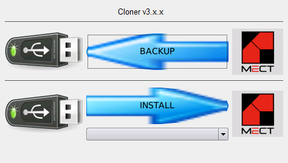

Cloner
Der “Cloner” wird verwendet, um eine Sischerungkopie einer Anwendung zu erstellen, und diese schließlich zur Aktualisierung anderer Geräte (desselben Modell) zu verwenden.

BACKUP-Verfahren:
Kopieren Sie die Dateien img_cloner_3.x.x.ext2 und sysupdate_cloner_3.x.x.sh in den Hauptordner eines USB-Stick (Format FAT32 einzelne Partition - ms-dos MBR).
Achtung: Verwenden Sie NICHT den “Edge”-Browser, weil er die Dateierweiterung ändert.
Achtung: Es sollte KEINE anderen Update-Dateien geben: sysupdate_…
Schalten Sie das Gerät aus.
Stecken Sie den USB-Stick ein (wenn das Gerät über einen Mikro-USB verfügt, verwenden Sie einen Mikro-USB-Adapter (Typ A) → USB).
Schalten Sie das Gerät ein.
Drücken Sie die Taste “BACKUP”.
Schreiben Sie den gewünschten Namen und drücken Sie 
Der Backup-Vorgang ist abgeschlossen, wenn Sie “Operation ‘Local file system’ completed.” lesen.
Schalten Sie das Gerät aus.
Entfernen Sie den USB-Stick.
Es wird ein “cloner”-Ordner auf dem Stick erstellt, in dem Sie eine Kopie von BACKUP finden.
INSTALL-Verfahren:
Kopieren in den Hauptordner eines USB-Stick (Format FAT32 einzelne Partition - ms-dos MBR):
die Dateien img_cloner_3.x.x.ext2 und sysupdate_cloner_3.x.x.sh.
Achtung: Verwenden Sie NICHT den “Edge”-Browser, weil er die Dateierweiterung ändert.
der “cloner”-Ordner.
Achtung: Innerhalb des “cloner”-Ordners muss sich ein Ordner mit dem Namen des “backup” befinden, das im BACKUP-Verfahren erstellt wurde. Innerhalb dieses Ordners muss sich die Datei “localfs.tar” befinden.


Prüfen Sie, ob es keine anderen Update-Dateien gibt: sysupdate_…
Schalten Sie das Gerät aus.
Stecken Sie den USB-Stick ein (wenn das Gerät über einen Mikro-USB verfügt, verwenden Sie einen Mikro-USB-Adapter (Typ A) → USB).
Schalten Sie das Gerät ein.
Wählen Sie die Version, die Sie installieren möchten, aus dem Dropdown-Menü aus.
Drücken Sie die Taste “INSTALL”.
Der INSTALL-Vorgang ist abgeschlossen, wenn Sie “Operation ‘Local file system’ completed.” Lesen.
Schalten Sie das Gerät aus.
Entfernen Sie den USB-Stick.